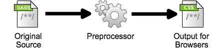

The Sassy World
of
Preprocessors
Cascading
Style
Sheets
Lets check out some code
#cssrules {
font-size: 20pt;
}
div.content {
font-size: 10pt;
background-color: #bada55;
margin: 20px;
}
div.content pre {
margin: 10px;
text-shadow: 2px 2px 2px #333;
border-radius 5px;
}
That's a lot of double maintenance code…
How about we add some variables?
$bgcolor: #bada55;
$fsize: 20pt;
#cssrules {
font-size: $fsize;
}
div.content {
font-size: 10pt;
background-color: $bgcolor;
margin: 20px;
}
div.content pre {
margin: 10px;
text-shadow: 2px 2px 2px #333;
border-radius 5px;
}
Let's put in some arithmetic
$bgcolor: #bada55;
$fsize: 20pt;
$common_margin: 10px;
#cssrules {
font-size: $fsize;
}
div.content {
font-size: $fsize / 2;
background-color: $bgcolor;
margin: $common_margin * 2;
}
div.content pre {
margin: $common_margin;
text-shadow: 2px 2px 2px #333;
border-radius 5px;
}
How about some lovely nesting?
$bgcolor: #bada55;
$fsize: 20pt;
$common_margin: 10px;
#cssrules {
font-size: $fsize;
}
div.content {
font-size: $fsize / 2;
background-color: $bgcolor;
margin: $common_margin * 2;
pre {
margin: $common_margin;
text-shadow: 2px 2px 2px #333;
border-radius 5px;
}
}
Can we do something about prefixes for border-radius?
Something like a mixin?
@mixin common-border {
$b: 5px;
-webkit-border-radius: $b;
-moz-border-radius: $b;
-o-border-radius: $b;
border-radius: $b;
}
Usage:
@include common-border;
// variables and mixin defs...
#cssrules {
font-size: $fsize;
}
div.content {
font-size: $fsize / 2;
background-color: $bgcolor;
margin: $common_margin * 2;
pre {
margin: $common_margin;
text-shadow: 2px 2px 2px #333;
@include common-border;
}
}
Yo dawg!
I heard you like to code, so I put some code in
your CSS so you can code in your CSS
How does it all work?
Browsers don't support this directly, but…
You can let the preprocessor watch for changes
Some tools also lets you live reload your
browser as you hack.
What other things can be preprocessed to our advantage?
HTML
Javascript
Jade
HTML replacement
Example Jade Code
doctype 5
html(lang="en")
head
title= pageTitle
script(type='text/javascript')
if (foo) {
bar();
}
body
h1 Jade - node template engine
#container
if youAreUsingJade
p You are amazing
else
p Get on it!
Generated HTML from Jade
<!DOCTYPE html>
<html lang="en">
<head>
<title>Jade</title>
<script type="text/javascript">
if (foo) {
bar();
}
</script>
<body>
<h1>Jade - node template engine</h1>
<div id="container">
<p>You are amazing</p>
</div>
</body>
</html>
Example Coffeescript Code
Javascript replacement
Example CoffeeScript code
square = (x) -> x * x cube = (x) -> square(x) * x
Generated Javascript from CoffeeScript
var cube, square;
square = function(x) {
return x * x;
}
cube = function(x) {
return square(x) * x;
};
Tools
There are a lot of tools to choose from:
Codekit (Mac OSX only)
Fire.app (Cross-Platform)
Middleman (Static Site Framework made in Ruby)
Web Workbench (Visual Studio extension)
SassAndCoffee (for .NET available via NuGet)
DEMOS!?